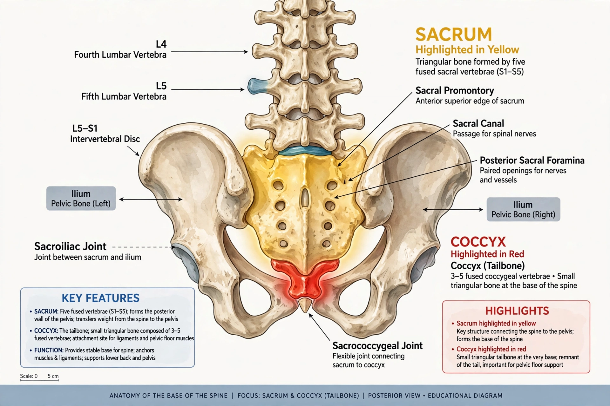

| Coccyx | |
|---|---|
 | |
| Details | |
| Precursor | Sclerotome (embryonic caudal vertebrae) |
| Articulations | Sacrum (sacrococcygeal joint) |
| Identifiers | |
| Latin | os coccygis |
| MeSH | D003050 |
| TA2 | 1095 |
The coccyx (from Greek κόκκυξ kokkyx, "cuckoo", because of its resemblance to a cuckoo's beak), commonly referred to as the tailbone, is the final segment of the vertebral column in all apes, and analogous structures in certain other mammals such as horses. In tailless primates (e.g. humans and other great apes) since Nacholapithecus (a Miocene hominoid), the coccyx is the remnant of a vestigial tail. In animals with bony tails, it is known instead as tailhead or dock, in birds as the pygostyle.
The coccyx is made up of three to five separate or fused vertebrae (the coccygeal vertebrae) below the sacrum, attached to the sacrum by a fibrocartilaginous joint, the sacrococcygeal symphysis, which permits limited movement between the sacrum and the coccyx. The first coccygeal vertebra has rudimentary transverse processes and cornua ("horns") that articulate with the sacrum. The vertebrae decrease in size downward, and in older adults the segments are commonly fused into a single triangular bone.
The coccyx is not entirely useless. It serves as an attachment site for several muscles, tendons, and ligaments of the pelvic floor, including the gluteus maximus, the levator ani group (iliococcygeus and pubococcygeus), and the anococcygeal ligament. It also supports and balances a person in the seated position, forming, with the two ischial tuberosities, a tripod-like support. The coccyx probably also provides support for the position of the anus.
Coccydynia is pain in the region of the coccyx, often following a fall onto the tailbone, childbirth, or prolonged sitting; most cases resolve with conservative measures such as cushions and anti-inflammatory medication, while surgical removal (coccygectomy) is reserved for refractory cases. Congenital conditions of the region include sacrococcygeal teratoma, a tumour of newborns arising near the coccyx, and spina bifida. Rarely, humans are born with a short vestigial tail containing coccygeal tissue.
This article is a recreation from memory in the style of Wikipedia.